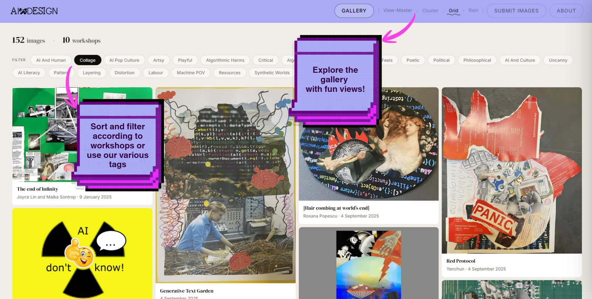
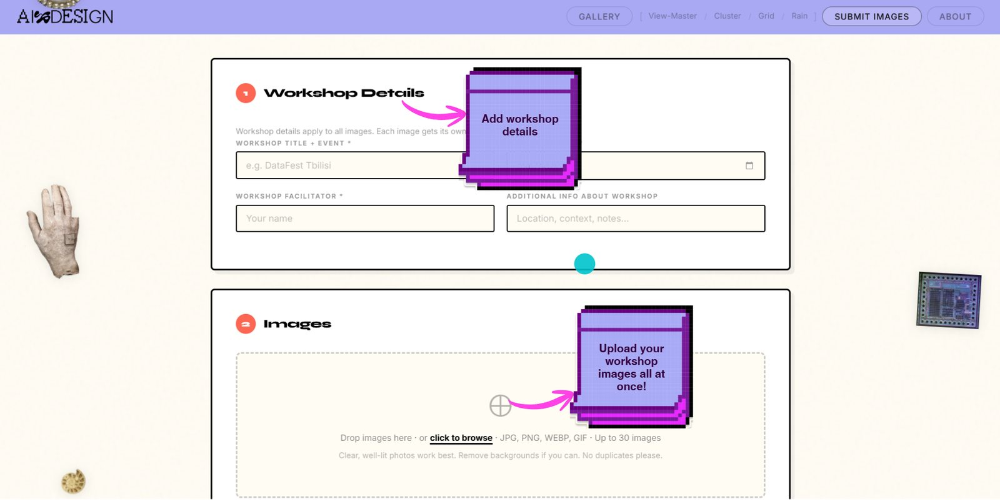
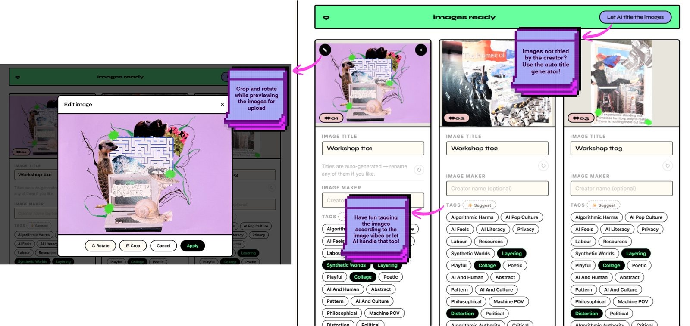
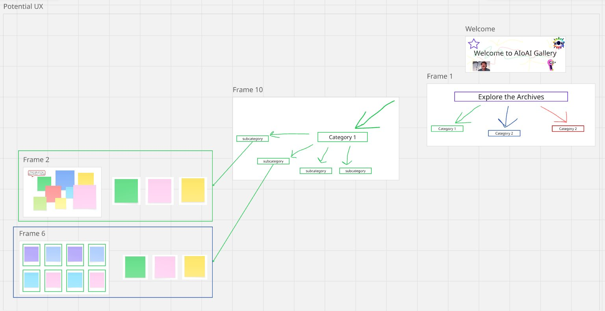

Internship · AIxDesign
AIoAI Community Gallery
A playful AI-focused community gallery where workshop participants can upload, tag, organize, and explore creative image submissions through multiple experimental views.

My role
Supported UI/UX feedback, feature ideation, visual planning, and interface improvements for the gallery and image submission experience.
UX focus
Making a creative archive easier to browse, filter, submit to, and understand — while keeping the platform experimental and fun.
ExploreGrid, Cluster, View-Master, and Rain views for browsing workshop images.
SubmitWorkshop details, bulk uploads, image preview, crop, and rotate.
LabelAI-assisted title generation plus manual and suggested tags.


